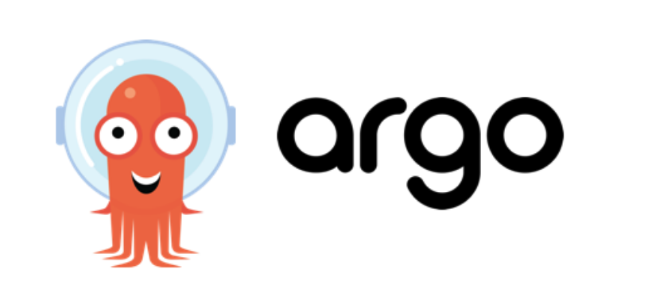
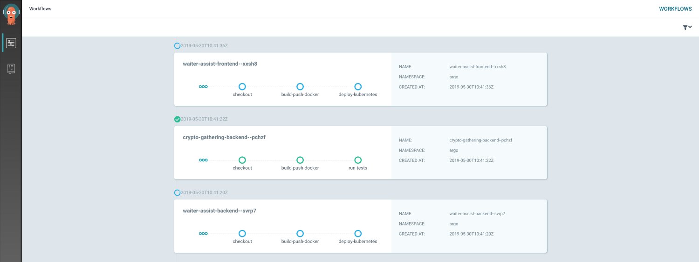

在 Kubernetes 上使用 Argo 实现 CI/CD
持续集成和持续交付是一些人为之努力的目标。它让一切事物变得更简单。当然，市面上有许多 CI/CD 工具，但是随着 Kubernetes 的日渐盛行，所有这些工具都需要做相应的调整。比如说，Jenkins，这款非常成熟的 CI/CD 工具在全球范围内被广泛使用，但是这款工具缺乏创新并且感觉有点笨重。同样的话也适用于 Spinnaker。一款出色的企业解决方案拥有让工作深入开展下去的资源，但是让 CI/CD 工具以一种快速、整洁的方式升级不是一个理想的选择。还有其他的一些工具可以为更简单的工作流提供更多的支持。其中一个就是我们本文中将要介绍的 Argo。

Argo 与众不同的地方在于它管理实际 CI/CD 的方式。它是专门为了 Kubernetes 开发的并且通过 CRD（Custom Resource Definitions）集成到 Kubernetes 中。它定义了一个新的名为‘工作流’的 CRD 。在这个工作流中你可以通过一个 yaml 格式的文件定义你需要执行的操作。每一步均运行在位于 Kubernetes 集群内它自己的 Docker 容器里面。
Argo/Argo CD/Argo CI
Argo 项目有几个正在开发的项目仓库。Argo 是主项目，聚焦于 Kubernetes 工作流以一种更通用的方式来被使用。Argo CD 是一种处理部署的 GitOps 方法，也就意味着 Kubernetes 集群从版本仓库镜像到任意位置时 git 仓库是事实上的唯一来源。Argo CI 看起来已经不再维护了，但是它曾经是作为 CI 工具用来基于 git 变更触发工作流的。为了安装 CI/CD 工具，你需要 Argo 以及它的工作流，同样也一个需要触发它们的 CI 工具。因为 Argo CI 已经没有开发活动了，我自己写了一个 Argo CI，可以通过 Bitbucket webhooks 触发 Argo 工作流。使用自己开发的 CI 工具，我开始试着使用 Argo 构建了一个功能全面的 CI/CD 工具。
BouweCeunen/argo-continuous-integration
Argo 工作流
Argo 拥有自己的 CRD，称其为工作流。它具有由一个 generateName 组成的元数据。它将作为在工作流步骤中运行节点的名称前缀。它可以定义 volumns，如同你在普通的 Kubernetes 上下文中指定那样。它们可以在定义后当做模板来使用。工作流中的 arguments 可以包含你的仓库名称，版本号等信息。在配置正确后，你可以开始定义工作流步骤中的 templates。你也可以定义一个模板，这个模板包含我在本例中所做的其他模板。定义一个 cicd 模板作为入口。这个模板包含多个步骤，依次包含所有其他的模板。每一个模板都有一个输入参数，用来在工作流步骤中传递数据。这取决于你定义多少步骤。需要记住的是每个步骤都运行在它自己的 Docker 容器中，充分利用你的 Kubernetes 集群资源而不必在 AWS 上拆分 EC2 实例。类似这样的事情在例如 Jenkins 上会是一个问题。
‘checkout’ 模板将会拉取一个仓库然后将其传递给其他需要使用的模板。它也可以传递到 git commit 它之后会被用作一个镜像 tag 。‘build-push-docker’ 将会构建和推送 Docker 容器到 Docker Registry。运行测试的话，如果所有步骤执行成功你将会得到一个 ‘run-tests’ 的模板，它将会被 ‘deploy-kubernetes’ 模板部署到你的 Kubernetes 集群。
apiVersion: argoproj.io/v1alpha1
kind: Workflow
metadata:
namespace: argo
generateName: crypto-gathering-backend--
spec:
hostNetwork: true
serviceAccountName: argo
entrypoint: cicd
volumes:
- name: docker-config
secret:
secretName: regcred
arguments:
parameters:
- name: repo
value: [git@bitbucket.org](mailto:git@bitbucket.org):bouwe_ceunen/crypto-gathering-backend.git
- name: revision
value: master
- name: image-name-backend
value: docker-registry.k8s.bouweceunen.com/crypto-gathering/crypto-gathering-backend
templates:
- name: cicd
steps:
- - name: checkout
template: checkout
- - name: build-push-docker
template: build-push-docker
arguments:
artifacts:
- name: git-repo
from: "{{steps.checkout.outputs.artifacts.source}}"
parameters:
- name: image-tag
value: "{{steps.checkout.outputs.parameters.tag}}"
- - name: run-tests
template: run-tests
arguments:
artifacts:
- name: git-repo
from: "{{steps.checkout.outputs.artifacts.source}}"
parameters:
- name: image-tag
value: "{{steps.checkout.outputs.parameters.tag}}"
- - name: deploy-kubernetes
template: deploy-kubernetes
arguments:
artifacts:
- name: git-repo
from: "{{steps.checkout.outputs.artifacts.source}}"
parameters:
- name: image-tag
value: "{{steps.checkout.outputs.parameters.tag}}"
Artifactory Library
Argo 使用 ‘artifactory library’ 存储步骤间执行状态。它会使下一个步骤使用上个步骤构建的东西成为可能。所有的步骤在 Kubernetes 它们自身的 Docker 容器运行，所以状态可以通过一个 artifact library 传递。这里有一些可以使用的库。其中一个是 AWS S3，但是同样也可以使用例如 Google Cloud Storage 这样的库。所有可用的库都在 GitHub 页面列出（译者：该链接已 404，请移步 Argo GitHub 查看）。运行了一部分 CI/CD 流水线之后，我开始想知道它是怎样影响我的 S3 存储的。如果你也想知道，你只需要很少的时间就能想出来。CI/CD 流水线结束后，产物已不再需要了。我写了一个小的定时任务用来每次删除我的 S3 bucket，以及清理工作流这样它们就不会出现在 Argo UI。下面的 ConfigMap 展示了 Argo 工作流控制器的配置。
apiVersion: v1
kind: ConfigMap
metadata:
name: workflow-controller-configmap
namespace: argo
data:
config: |
artifactRepository:
s3:
bucket: k8s-argo-artifacts-bucket.bouweceunen.com
endpoint: s3.amazonaws.com
executor:
resources:
requests:
cpu: 100m
memory: 100Mi
limits:
cpu: 400m
memory: 800Mi
Git 检出
首先，检出 git 仓库。这对构建 Docker 容器以及使用仓库中的 Ansible 脚本执行部署来说是必须的。为了让 Argo 获取一些例如 Bitbucket 账号这样的私有信息，需要有相应的凭据。这可以通过在模板中定义 ‘git’ 来实现。‘sshPrivateKeySecret’ 获取 id_rsa key，用来访问私有仓库。在这个例子中，则是从一个名为 ‘bitbucket-creds’ 的 Kubernetes Secret。id_rsa 存储的秘钥同样也可以存储 Kubernetes Secrets 的其他值。然后作为一个 artifact 输出该仓库然后暴露出后面被用来作为镜像 tag 的 git commit。
- name: checkout
inputs:
artifacts:
- name: git-repo
path: /src
git:
repo: "{{workflow.parameters.repo}}"
revision: "{{workflow.parameters.revision}}"
sshPrivateKeySecret:
name: bitbucket-creds
key: id_rsa
metadata:
labels:
app: argo
container:
image: alpine/git
resources:
requests:
cpu: 100m
memory: 100Mi
limits:
cpu: 400m
memory: 800Mi
command: [sh, -c]
args: ["cd /src && git rev-parse --short HEAD > /tmp/git-commit"]
outputs:
artifacts:
- name: source
path: /src
parameters:
- name: tag
valueFrom:
path: /tmp/git-commit
Docker 构建
下一步就是构建你的 Docker 容器以便于他们用于运行你的测试。你可以在 Argo 工作流中定义 ‘sidecars’，它会运行一个 Docker 守护进程这样你可以在自己的 Docker 容器中构建 Docker 容器。这里同样参考了 docker-in-docker 或 dind。为了能够推送容器到你的私有 Docker registry，需要设置凭据。通过在根目录下装载文件完成该工作。当执行 ‘_kubectl create secret docker-registry credentials_’ 在 Kubernetes 中创建一个 Docker Secret 时，会生成一个 .dockerconfigjson。在 ‘_spec_’ 下该卷会挂载到你的根工作流。通过在一个模板中定义它们使得在 Argo 工作流内构建和推送你的 Docker 容器会变得非常简单，如下面写的那样。
- name: build-push-docker
inputs:
artifacts:
- name: git-repo
path: /src
parameters:
- name: image-tag
metadata:
labels:
app: argo
container:
image: docker:18.09
resources:
requests:
cpu: 100m
memory: 100Mi
limits:
cpu: 400m
memory: 800Mi
workingDir: /src
command: [sh, -c]
args: ["until docker ps; do sleep 1; done; cd /src \
&& docker build . -t {{workflow.parameters.image-name-backend}}:{{inputs.parameters.image-tag}} && docker push {{workflow.parameters.image-name-backend}}:{{inputs.parameters.image-tag}}"]
env:
- name: DOCKER_HOST
value: 127.0.0.1
volumeMounts:
- name: docker-config
mountPath: /root/.docker/config.json
subPath: .dockerconfigjson
sidecars:
- name: docker-in-docker
image: docker:18.09-dind
resources:
requests:
cpu: 100m
memory: 100Mi
limits:
cpu: 400m
memory: 800Mi
securityContext:
privileged: true
mirrorVolumeMounts: true
持续集成
CI 部分跟前面的差不多，它不包括用来部署应用程序到运行测试的 Kubernetes 集群的 Ansible。它可以对实际部署执行全面的集成测试。在 Ansible 配置里面，‘kubectl exec’ 配合 ‘yarn test’ 可以用来在匹配的 pod 中执行测试。如果成功，它将自行清理并继续接下来的工作流。我使用 Ansible 而不是工作流本身执行测试的目的在于工作流提供的实际部署细节很少，比如命名空间，集群名字等等。使用 Ansible 你可以自动设置环境的权限，Argo 不需要知道任何关于部署在哪执行以及怎样正确执行测试这样的细节信息。
- name: run-tests
inputs:
artifacts:
- name: git-repo
path: /src
parameters:
- name: image-tag
metadata:
labels:
app: argo
container:
image: bouwe/ansible-kubectl-credstash:0.0.1
workingDir: /src
command: [sh, -c]
args: ["cd /src/ansible \
&& ansible-playbook run-backend-test-on-k8s.yml -i environments/backend-test/backend-k8s -e docker_image_tag={{inputs.parameters.image-tag}}"]
持续交付
CD 部分会部署应用程序到 Kubernetes。通过执行一个运行 Ansible 的模板来实现。如你所见，这个模板有一些输入，例如 git 仓库，该仓库是从 cicd 模板传下来的。还有镜像 tag 这样 Ansible 就会知道需要把哪个 Docker 容器部署到 Kubernetes。我自己构建了一个定制的容器里面包括 Ansible、Kubectl 以及 credstash，模板的参数使用 credstash 在 yamls 做了定义。
- name: deploy-kubernetes
inputs:
artifacts:
- name: git-repo
path: /src
parameters:
- name: image-tag
metadata:
labels:
app: argo
container:
image: bouwe/ansible-kubectl-credstash:0.0.1
resources:
requests:
cpu: 100m
memory: 100Mi
limits:
cpu: 400m
memory: 800Mi
workingDir: /src
command: [sh, -c]
args: ["cd /src/ansible \
&& ansible-playbook deploy-backend-to-k8s.yml -i environments/backend/backend-k8s -e docker_image_tag={{inputs.parameters.image-tag}}"]
同样重要的是修改 Argo 的 ClusterRole 这样就可以部署到 Kubernetes 集群的所有命名空间里面。ClusterRole 定义如下，这样就可以部署所有的 CRD 例如 Deployments、Services 等等。
apiVersion: rbac.authorization.k8s.io/v1
kind: ClusterRole
metadata:
name: argo-cluster-role
rules:
- apiGroups: ["*"]
resources:
- pods
- pods/exec
- secrets
- ingresses
- services
- jobs
- deployments
- statefulsets
- cronjobs
- workflows
- configmaps
verbs: ["*"]
UI 控制面板
如果其他所有的新兴工具那样，都需要从某一个地方开始而对于 Argo 来说则是通过控制面板开始。功能最小化但是包含了所有需要做的东西。Argo 展示了所有工作流以及它们的步骤，它会自动更新所有进度以及日志都可以从这里看到。这样就会非常简单的监控所有的执行情况。当下不要期望太多，我希望他们会一直优化它，它会有很多潜力可待发掘。

总结
Argo 非常容易理解，它集成在 Kubernetes 使用 Kubernetes 集群实现 CI/CD。它比我们说的 Spinnaker、Istio 等等这些工具更简洁，更轻量。安装简单可以完成所需的工作。Argo 的主程序定义了自己的 CRD，称为 ‘Workflow’。Argo CI 已经不再开发了，但是我创建了一个自己的实现程序。Argo CD 是一个管理部署的 GitOps 方法。与我自己实现的 Argo CI 以及 Argo 工作流一起，在 Kubernetes 集群设置运行一个 CI/CD 流水线成为可能。